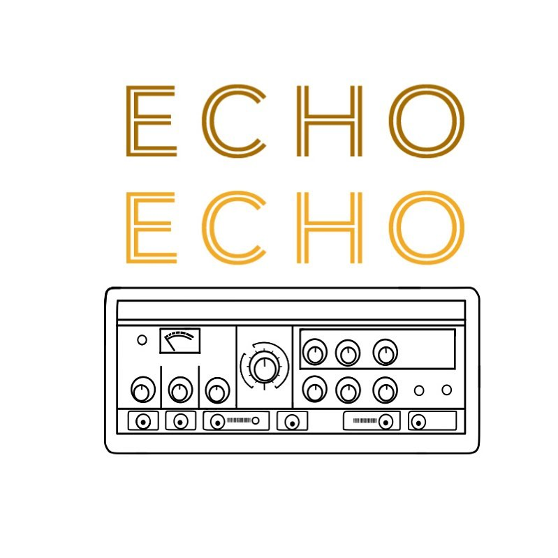
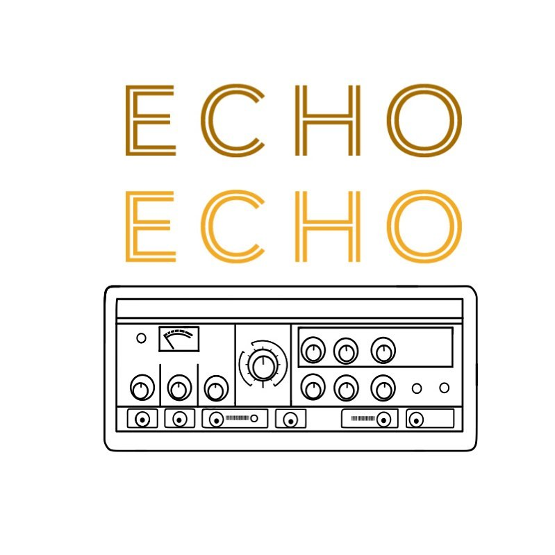

About Us
Located in the former Type Foundry recording space that has seen artists over the years such as M. Ward, Sleater Kinney,
The Decemberists, Red Fang and Y La Bamba, echo echo is one of the largest recording spaces in the Portland metro area.
We offer over 2000 Sqft including our tracking room for recording and rehearsal, a large iso room, small iso booth and
extensive control room with some of the best equipment available.
What sets Echo Echo apart is the vast collection of instruments and amplifiers available for your session along with one
of the best mic lockers in town. Sporting more vintage tube amps and guitars you can shake a stick at, there is no tone
unreachable.
Our large control room is comfortable and outfitted with a modified Yamaha PM2000 at the center, flanked by some of the
best outboard compressors, EQs, preamps and effects to help craft your sound and get your record sounding its best.
We offer 24 track tape recording via our MCI JH24 and digital with both Pro Tools and Logic available.
Email us to book your session today!
Our Engineers
 Matt Thomson - Engineer/Producer/Manager
Matt Thomson - Engineer/Producer/Manager
 Matthew Zeltzer - Producer/Engineer/Manager

Matthew Zeltzer - Producer/Engineer/Manager

Clients
Abronia
Margo Cilker
MAITA
Night Herron
Christa Buckland
Stoner Control
Matt Mitchell
Sleater-Kinney
Shaylee
Girlfiend
Babe Ruthlass
Holy Basil
Kassi Valazza
Tabor
Creature Party
Federale
The Shivas
Jenny Don't and the Spurs
Smile Pile
Tenants
Chad Bault
Henry Chadwick
Sunday State
Roselit Bone
Olivia Awbrey
The Hague
Cicada Cycle
Léna Bartels
Smile Pile
Pale Violet
Blisser
Babe Ruthless
Tamar Berk
Malachi Graham
Heavy Totals
Erisy Watt
Bridal Veil
Valley Sun
French International School
Sam Greenspan
The Saying and the Said
Heavy Totals